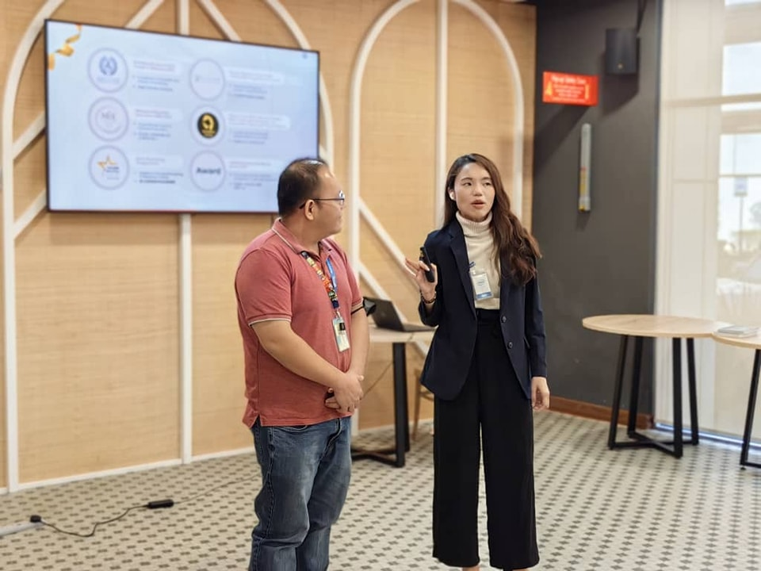

From classrooms to conferences, from radio stations to community
halls, Dr. Elaine’s work has been featured on stages, in
publications, and across the media. Every recognition is not just
an award, but a reflection of a mission: to turn inner potential
into global impact.

“From boardrooms to classrooms — a voice connecting people and
purpose.”
Elaine is a sought‑after voice in corporate and professional
circles, sharing frameworks that help leaders and educators
upgrade their 5Q MindVehicle™.
Featured as a corporate trainer in leadership, awareness, and
communication.
Invited to policy‑level forums and professional summits,
aligning human development with organizational transformation.
Association & Community Engagement
Elaine has been an active contributor to associations and public
causes, bringing science‑based parenting and mental wellness to
diverse communities.
Visited KKM (Ministry of Health Malaysia) on preventive mental
health campaigns.
Organized Family Carnivals and community parenting events, building
bridges between parents, educators, and policy leaders.
“Connecting people from national platforms to local communities.”
Parenting Features & Testimonials
Parents across Asia have testified to the transformation they
experienced. Featured in parenting magazines and family platforms,
giving voice to modern mothers and fathers searching for balance.